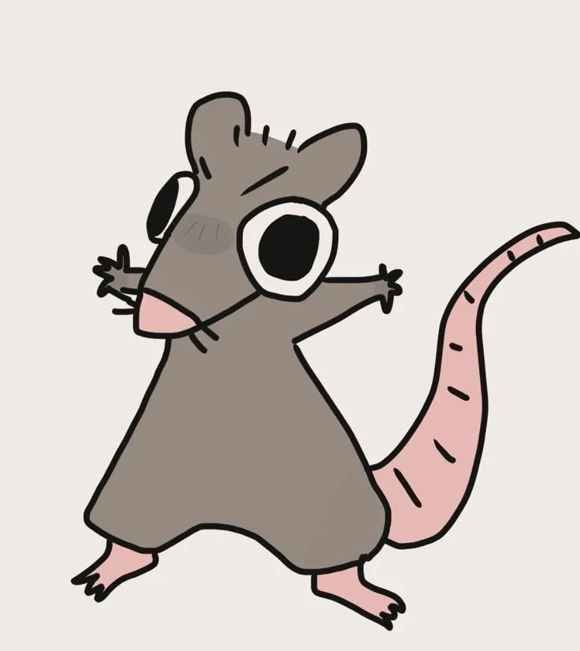

You've done it. You compeleted the cure. However, it was not perfect. It wiped out only 60% of the virus from the world. Further, the 40% that were not wiped, now have an immunity to your potion.
Upon this realization, the leaders of the world stop all wars, all conflicts, soley to focus on saving the trees of their united home. If they didn't act fast, there would now be stronger, mutated virus killing all the trees; its all your fault.
Although you take all of the blame, Humanity wants you to pay for your mistake by aiding them in wiping the virus out for good.
After years of global unification and collaboration, Humanity does not persevere, but finds a way to live with the virus, containing it for as long as they stay united.
You are forced to slave away your entire life in a united front that is Humanity's Earth.
Oh well, at least you have your pet rat, Dumbo!
